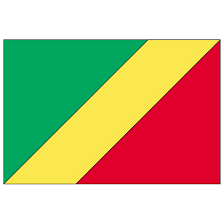

About Me
My name is Aristid Wilbrech ELENGA-ASSEKA from Congo Brazzaville . I am one of BYU-Idaho student, i get my higth school certificate at Henri Lopes high school at Gamboma, I belong to a family of seven persons Me; my Brother my Mother and four of my Sisters. I am a Web programming learner. My strengths are I am Honest; Ponctual; Self-motivated; Quick-learner and Hardworking. I love Sport; Music and Learning.
Republic of Congo, Brazzaville

Republic of Congo, The Republic of the Congo (also known as Congo-Brazzaville) is a country located in Central Africa, bordered by Gabon to the west, Cameroon and the Central African Republic to the north, the Democratic Republic of the Congo to the east and south, and the Atlantic Ocean to the southwest. Its capital and largest city is Brazzaville. With a population of around 5.5 million people, the Republic of the Congo is rich in natural resources, particularly oil, which is the backbone of its economy. The country also has vast rainforests and is home to diverse wildlife, including gorillas and forest elephants.